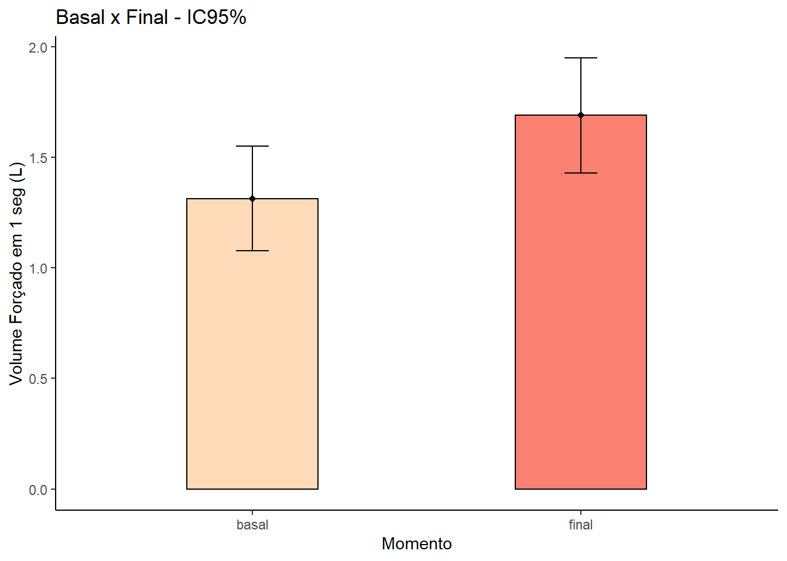

Capítulo 15 Teste t para Amostras Pareadas
Um teste t pareado é usado para estimar se as médias de duas medidas relacionadas são significativamente diferentes uma da outra. Esse teste é usado quando duas variáveis contínuas são relacionadas porque são coletadas do mesmo participante em momentos diferentes (antes e depois), de locais diferentes na mesma pessoa ao mesmo tempo ou de casos e seus controles correspondentes.
15.1 Pacotes necessários
pacman::p_load(readxl,
dplyr,
tidyr,
car,
rstatix,
ggplot2,
knitr,
kableExtra,
lsr,
dabestr,
sciplot,
psych)15.2 Leitura e exploração dos dados
O banco de dados é constituído por uma amostra de 15 escolares portadores de asma não controlada. Fizeram avaliação da sua função pulmonar no início do uso de um novo corticoide inalatório. Após 60 dias, repetiram a avaliação da função pulmonar. Para obter o banco de dados, clique aqui. Faça o downloado para o seu diretório de trabalho.
Crie um objeto dados para recebê-lo, a partir do diretório de trabalho, executando o seguinte código:
dados <- read_excel ("C:/Users/petro/Dropbox/Git_repositório/Arquivos/dadosPar.xlsx")A função read_excel() do pacote readxl abre o arquivo dadosPar.xlsx. Eles podem ser visualizados, usando a função head() que mostra estrutura e o formato dos dados:
head (dados)## # A tibble: 6 × 3
## id basal final
## <dbl> <dbl> <dbl>
## 1 1 1.3 1.53
## 2 2 1.47 1.63
## 3 3 2.06 2.35
## 4 4 1.95 2.7
## 5 5 1.47 2.01
## 6 6 1.13 1.53O dataframe dados está no formato amplo (wide). Vamos transformá-lo para o formato longo (long), usando a função pivot_longer () do pacote tidyr. ESte processo não é obrigatório, mas vamos realizá-lo para fins de treinamento. O novo banco de dados será atribuído ao denominado dadosL. A função pivot_longer () necessita dos seguintes argumentos:
| Argumento | Significado |
|---|---|
| dados | dataframe a ser pivotado, tranformado; |
| cols | colunas a serem transformadas no formato longo; |
| names_to | Especifica o nome da coluna a ser criada a partir dos dados armazenados nos nomes das colunas de dados; |
| values_to | Especifica o nome da coluna a ser criada a partir dos dados armazenados nos valores das células; |
| … | possui outros argumento. Ver ajuda. |
dadosL <- dados %>%
pivot_longer(c(basal, final),
names_to = "momento",
values_to = "medidas")A estrutura do banco de dados dadosL é:
head(dadosL)## # A tibble: 6 × 3
## id momento medidas
## <dbl> <chr> <dbl>
## 1 1 basal 1.3
## 2 1 final 1.53
## 3 2 basal 1.47
## 4 2 final 1.63
## 5 3 basal 2.06
## 6 3 final 2.3515.2.1 Medidas Resumidoras
Para resumir as variáveis, usaremos as funções group_by (), summarise () e mutate () do pacote dplyr, aplicadas ao formato longo dadosL:
resumo <- dadosL %>%
group_by(momento) %>%
summarise(n = n (),
media = mean(medidas),
dp = sd (medidas),
mediana = median (medidas),
IIQ = IQR (medidas)) %>%
mutate(ep = dp/sqrt(n)) %>%
mutate(me = ep * qt(1 - (0.05/2), n - 1))
resumo## # A tibble: 2 × 8
## momento n media dp mediana IIQ ep me
## <chr> <int> <dbl> <dbl> <dbl> <dbl> <dbl> <dbl>
## 1 basal 15 1.31 0.427 1.26 0.48 0.110 0.236
## 2 final 15 1.69 0.471 1.59 0.38 0.122 0.26115.2.2 Visualização dos dados
15.2.2.1 Tabela
É possível exibir os dados, tanto o banco de dados dados como o dadosL, de uma maneira mais elegante, usando a função kable() do pacote knitr e a função kable_styling() do pacote kableExtra. A função kable () usa a função head() embutida. Ao executar os códigos, se não for especificado, é mostrado apenas 6 linhas. Iremos usar o formato amplo e todas as suas 15 linhas:
kable(head(dados, 15),
col.names = c("Id", "Basal", "Final")) %>% kable_styling(full_width = FALSE, bootstrap_options = c("striped", "hover", "condensed", "responsive"))| Id | Basal | Final |
|---|---|---|
| 1 | 1.30 | 1.53 |
| 2 | 1.47 | 1.63 |
| 3 | 2.06 | 2.35 |
| 4 | 1.95 | 2.70 |
| 5 | 1.47 | 2.01 |
| 6 | 1.13 | 1.53 |
| 7 | 1.48 | 1.66 |
| 8 | 0.94 | 1.59 |
| 9 | 1.05 | 1.50 |
| 10 | 0.87 | 1.61 |
| 11 | 0.75 | 1.17 |
| 12 | 1.26 | 1.30 |
| 13 | 1.21 | 1.41 |
| 14 | 0.78 | 1.00 |
| 15 | 1.99 | 2.37 |
O argumento full_width =FALSE, reduz a largura da tabela e a boostrap_options = admite vários opções além da basic, isoladas ou combinadas:
- striped: adiciona listras zebradas à tabela;
- hover: adiciona cor de fundo cinza nas linhas da tabela;
- condensed: torna a tabela mais compacta;
- responsive: faz rolagem horizontal quando há menos de 768 px (20,32 cm)
15.2.2.2 Gráficos
Apenas por uma questão didática, vamos apresentar várias maneiras de mostrar os dados visualmente. Podem ser usados qualquer um dos tipos a seguir, pois todos dão, praticamente, a mesma informação.
Gráfico de barra de erro
resumo %>%
ggplot(aes(x=momento, y=media, fill=momento)) +
geom_bar(stat="identity", width = 0.4, color="black") +
geom_point() +
geom_errorbar(aes(ymin=media-me, ymax=media+me), width=0.1,
position=position_dodge(.9)) +
labs(title="Basal x Final - IC95%" ,
x="Momento", y = "Volume Forçado em 1 seg (L)")+
theme_classic() +
theme(legend.position="none") +
scale_fill_manual(values=c("peachpuff","salmon"))
Neste gráfico, a altura da barra representa a média do VEF1 nos diferentes momentos (basal e final).O erro corresponde a margem de erro (me) a partir do ponto (média), ou seja, é o intervalo de confiança de 95%.
Boxplot
dadosL %>%
ggplot(aes(x = momento, y = medidas, fill = momento)) +
geom_errorbar(stat = "boxplot", width = 0.1) +
geom_boxplot (outlier.color = "red",
outlier.shape = 1,
outlier.size = 1) +
scale_fill_manual(values = c("peachpuff", "salmon")) +
ylab("VEF no 1º seg (L)") +
xlab("Momento") +
stat_summary(fun = mean,
geom = "point",
shape = 19, size = 2, color="red") +
theme_classic() +
#theme(text = element_text(size = 15)) +
theme(legend.position = "none")
A altura da caixa (box) dos boxplots é o intervalo interquartil (IIQ) e corresponde a 50% dos dados. A linha que corta horizontalmente a caixa é a mediana. Os bigodes da caixa (whiskers) em suas extrimidades são os limites inferior e superior dos dados, excluindo os valores atípicos (outliers), representado no boxplot final por um ponto vermelho, acima do limite superior. Os losangos em vermelho (opcionais) representam as médias.
Gráfico de linha
resumo %>%
ggplot(aes(x=momento, y=media, group=1)) +
geom_point() +
geom_line(linetype ='dashed') +
geom_errorbar(aes(ymin=media - me,
ymax=media + me),
width=0.1,
col = c("red","salmon4")) +
theme_classic()+
labs(x='Momento',
y='VEF1 (L)')
Este gráfico de linha com representação da margem de erro tem a mesma interpretação do gráfico de barra de erro. A escolha do tipo de gráfico depende da ênfase do autor sobre os dados.
15.2.3 Criação de uma variável que represente a diferença entre as médias
À diferença entre as média basal e final será atribuído o nome dif. Para realizar esta ação, usaremos o banco de dados amplo (dados):
dados$dif <- dados$basal - dados$final
head (dados)## # A tibble: 6 × 4
## id basal final dif
## <dbl> <dbl> <dbl> <dbl>
## 1 1 1.3 1.53 -0.23
## 2 2 1.47 1.63 -0.16
## 3 3 2.06 2.35 -0.29
## 4 4 1.95 2.7 -0.75
## 5 5 1.47 2.01 -0.54
## 6 6 1.13 1.53 -0.4Atenção, agora, o banco de dados apresenta uma nova variável dif, pois o foco do teste t pareado é essa diferença entre as médias, basal e final, a média das diferenças.
15.2.4 Resumo da variável dif
dados %>%
summarise(media = mean (dif),
dp = sd (dif),
mediana = median (dif),
IIQ = IQR (dif),
mim = min (dif),
max = max (dif))## # A tibble: 1 × 6
## media dp mediana IIQ mim max
## <dbl> <dbl> <dbl> <dbl> <dbl> <dbl>
## 1 -0.377 0.218 -0.38 0.285 -0.75 -0.0400Existe uma diferença de 0,37L entre o VEF1 basal e o final. A pergunta que se faz é: Esta diferença tem significância estatística? Os gráficos sugerem que sim!
15.3 Definição das hipóteses estatísticas
Será usado um teste bicaudal. Se a intervenção não produz efeito, então:
\(H_{0}\): \(\mu_{dif} = 0\)
Se a intervenção produz efeito, então:
\(H_{A}\): \(\mu_{dif} ≠ 0\)
15.4 Regra de decisão
O nível significância, \(\alpha\), escolhido é igual a 0,05. O número de graus de liberdade é igual a:
n <- nrow(dados)
gl <- n - 1
gl## [1] 14alpha <- 0.05
tc <- round (qt((1-alpha/2), gl), 3)
tc # t crítico## [1] 2.145Portanto, se
\(|t_{calculado}| < t_{crítico}|\) -> não rejeitar \(H_{0}\)
\(|t_{calculado}| > t_{crítico}|\) -> rejeitar \(H_{0}\)
15.5 Verificação dos pressupostos
Aqui, verifica-se a normalidade da diferença entre as médias:
shapiro.test(dados$dif)##
## Shapiro-Wilk normality test
##
## data: dados$dif
## W = 0.94216, p-value = 0.4103p <- ggplot(dados, aes(sample = dif)) +
stat_qq() +
stat_qq_line(col ='red') +
labs(y = "Diferença Basal-Inicial",
x = "Quantis teóricos") +
theme_classic()
p
Pelos resultados, podemos aceitar que os dados tem assimetria. Entretanto, esta não é suficientemente grande para rejeitar a hipóteses nula (teste de Shapiro-Wilk com P > 0,05)
15.6 Cálculo do teste Estatístico
O cálculo do teste t pareado usa a mesma função do teste t para amostras independentes, t.test (), mudando o argumento paired =TRUE(padrão) por paired =FALSE. Assim:
t.test(dados$basal,
dados$final,
alternative = "two.sided",
paired = TRUE,
conf.level = 0.95,
var.equal=TRUE)##
## Paired t-test
##
## data: dados$basal and dados$final
## t = -6.6969, df = 14, p-value = 1.016e-05
## alternative hypothesis: true mean difference is not equal to 0
## 95 percent confidence interval:
## -0.4973000 -0.2560333
## sample estimates:
## mean difference
## -0.3766667- t é o valor estatístico do teste t pareado,
- df são os graus de liberdade ,
- p-value é o valor P do teste t.
- conf.int é o IC95% da diferença média;
- sample estimates é estimativa da diferença média
Também pode ser calculado usando a fórmula y ~ x com os dados no formato longo (dadosL):
t.test(formula = medidas ~ momento,
data = dadosL,
alternative = 'two.sided',
paired = TRUE)##
## Paired t-test
##
## data: medidas by momento
## t = -6.6969, df = 14, p-value = 1.016e-05
## alternative hypothesis: true mean difference is not equal to 0
## 95 percent confidence interval:
## -0.4973000 -0.2560333
## sample estimates:
## mean difference
## -0.376666715.7 Conclusão
Conclui-se, o VEF1 dos escolares asmáticos se modificou significativamente entre o início e após 60 dias do uso de um novo medicamento com uma confiança de 95%. A diferença (\(\mu_{basal} - \mu_{final}\)) encontrada é estatisticamente significativa (t = 12,06, gl = 58, P = 2,2 x 10-16), com uma confiança de 95%. Observe que o intervalo de confiança de 95% da diferença de -0,38 está todo abaixo de zero, confirmando a significância.
\[
IC_{95\%}(\mu_{diff})\rightarrow(-0.497, -0.256)
\]
## Apresentação gráfica dos resultados
Podemos exibir o gráfico da diferença média, descrito por Gardner-Altman (1986), usando o pacote dabestr com as funções dabest (), mean_diff () e plot () com um objeto dabest_effsize (mean_diff, por exemplo). Para detalhes consulte dabestr.
grupos.pareados <-
dadosL %>%
dabest(momento, medidas,
idx = c("final", "basal"),
paired = TRUE,
id.column = id)
grupos.pareados## dabestr (Data Analysis with Bootstrap Estimation in R) v0.3.0
## =============================================================
##
## Good evening!
## The current time is 18:00 on terça-feira setembro 13, 2022.
##
## Dataset : .
## The first five rows are:
## # A tibble: 5 × 3
## id momento medidas
## <dbl> <fct> <dbl>
## 1 1 basal 1.3
## 2 1 final 1.53
## 3 2 basal 1.47
## 4 2 final 1.63
## 5 3 basal 2.06
##
## X Variable : momento
## Y Variable : medidas
##
## Paired effect size(s) will be computed for:
## 1. basal minus finaldifMedia <- mean_diff(grupos.pareados, ci = 95)
difMedia## dabestr (Data Analysis with Bootstrap Estimation in R) v0.3.0
## =============================================================
##
## Good evening!
## The current time is 18:00 on terça-feira setembro 13, 2022.
##
## Dataset : .
## X Variable : momento
## Y Variable : medidas
##
## Paired mean difference of basal (n = 15) minus final (n = 15)
## -0.377 [95CI -0.712; -0.0613]
##
##
## 5000 bootstrap resamples.
## All confidence intervals are bias-corrected and accelerated.plot(difMedia,
color.column = momento,
show.legend = FALSE,
rawplot.ylabel = "VEF1 (L)",
effsize.ylabel = "Diferença Média",
slopegraph = FALSE)
15.8 Tamanho do Efeito
O tamanho do efeito pode ser determinado como no teste t independente, com o teste d de Cohen, usando a função cohensD () do pacote lsr:
cohensD (dados$basal, dados$final)## [1] 0.8379499Os pesquisadores costumam usar as seguintes diretrizes (LAKENS, 2013) para interpretar o resultado:
| d | Tamanho do Efeito |
|---|---|
| \(< 0.2\) | insignificante; negligenciável |
| \(0.2 < 0.5\) | pequeno |
| \(0.5 < 0.8\) | médio |
| \(\ge 0.8\) | grande |
Neste caso, temos uma magnitude de efeito que é considerada grande.
15.9 Leitura Adicional
Altman DG. Practical Statistics for Medical Research. Boca Raton, FL: Chapman & Hall/CRC; 1991. Comparing groups - continuous data; 189-91.
Gardner MJ, Altman DG.Confidence intervals rather than P values: estimation rather than hypothesis testing.BMJ 1986; 292:746-50.
Oliveira Filho PF. Epidemiologia e Bioestatística: fundamentos para a leitura crítica. 2ª ed. Rio de Janeiro: Editora Rubio Ltda; 2022. Testes Paramétricos;p.137-8.
Vu J, Harrington D. Introductory Statistics for the Life and Biomedical Sciences. Openintro; 2021. Inference for Numerical Data; p.152-67. Disponível em: https://stats.libretexts.org/Bookshelves/Introductory_Statistics/Book%3A_OpenIntro_Statistics_(Diez_et_al)./05%3A_Inference_for_Numerical_Data